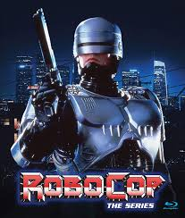

Listado de series y peliculas
by William Hernandez
Robocop
"Mitad hombre, mitad máquina, todo policía." Con esta tagline coronando su póster, es imposible que 'Robocop' decepcione a nadie.
No sólo es una de las películas más violentas de esta lista —la escena en la que masacran al pobre Murphy sigue siendo espeluznantemente;
sino que atesora una dirección brillante de un Paul Verhoeven cuyo debut en Estados Unidos marcó un antes y un después en su carrera.
ver trailer

Ir a pagina index